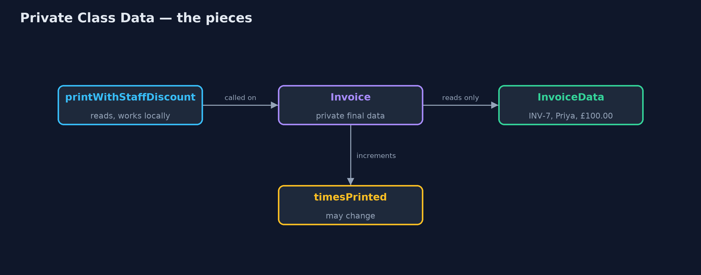
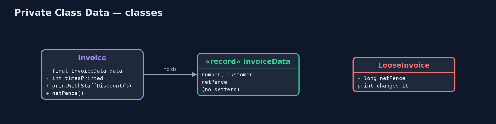
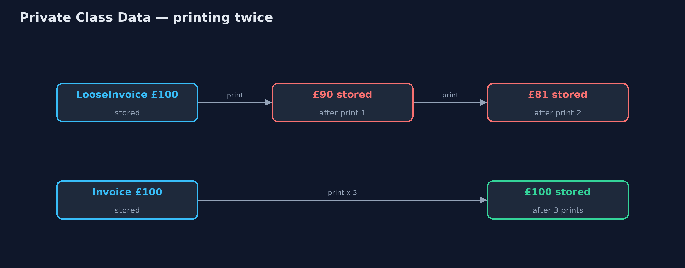
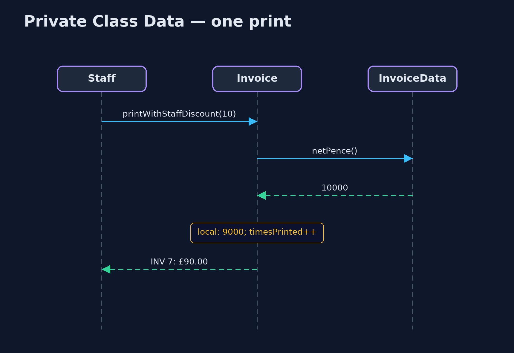

Private Class Data Pattern
src/main/java/com/jk/explore/privateclassdata/
├── Invoice.java The pattern: the invoice keeps its figures in a private, unchangeable data object
├── InvoiceData.java The pattern's data class: the invoice's figures, set once, with no way to change them afterwards
├── LooseInvoice.java Without the pattern: the invoice's figures are ordinary fields, so its own methods can change them
└── PrivateClassDataDemo.java The five acts: a method that changes its own figures, private class data, no way to write, working state beside it, and the billPut the figures a class must never change into a private, unchangeable data object, so not even the class's own methods can overwrite them.
Private Class Data is a small pattern about protecting a class from itself. Ordinary encapsulation hides fields from other classes, but the class's own methods can still change them, by accident or as a shortcut. With private class data, the values that must never change after construction move into a separate data object with final fields and no setters. The class holds it privately and can read it, but not write it.
Anything that is genuinely meant to change, such as a counter, stays an ordinary field beside it. The class decides, field by field, what may change.
The idea in everyday terms
Think of a museum exhibit in a glass case. The staff look after it every day: they clean the glass, count the visitors, change the label lights. But the exhibit itself is locked inside, and nobody, not even the staff, can pick it up and alter it. The things that are meant to change sit outside the glass.
The scenario
The online store prints invoices, and staff sometimes print one with a staff discount shown. The invoice's print method took a shortcut: it subtracted the discount from its own stored total before printing. Printing it twice took the discount twice, and the invoice itself now said £81 instead of £100.
Run
./gradlew runThe demo tells the story in 5 acts, each printing exact numbers that the tests check:
| Act | What it shows |
|---|---|
| 1. A method changes its own figures | Printing INV-7 with a 10% staff discount shows £90.00, then £81.00; the invoice itself now says £81.00. |
| 2. Private class data | The figures move into a private InvoiceData record; printed three times, it shows £90.00 each time and still says £100.00. |
| 3. Nothing can write | InvoiceData has 0 setters and final fields; the loose invoice's shortcut would not compile. |
| 4. Working state beside the data | The invoice counts its prints (3) while its figures stay at £100.00. |
| 5. The bill | One more class and one more hop on every read; for a small class with no risky methods it is ceremony. |
Test
./gradlew test5 tests in DemoRunsTest, InvoiceTest. Every number the demo prints is asserted, and nothing depends on the clock, so every run gives the same result.
Technologies and versions
| Technology | Version | Used for |
|---|---|---|
| Java | 21 | the code (toolchain set in build.gradle) |
| Gradle | 9.2.1 (wrapper) | build and run, nothing to install |
| JUnit | 5.10.2 | the tests |
| videokit | repository tool | the narrated video and animation: Piper en_US-amy-medium, speed 0.8, longer pauses (the approved amy-slow voice) |
Learning Material
| Document | What it is for |
|---|---|
| Problem statement | the situation and what the project must show |
| Prerequisites | what you need to know first |
| Private Class Data, explained | the acts in prose |
| Session guide | a one-hour lesson with exercises |
| Animated walkthrough | the acts step by step, narrated |
| Spec | what this project must be true of |
The pattern in one picture
The invoice reads its data but cannot write it; the counter sits outside.

Where each piece sits
One record of final fields, held privately.

How the data moves
The loose invoice drifts; the protected one does not.

Who calls whom, in order
Read the data, compute locally, count the print.

Video
video/private-class-data-pattern-explained.mp4 (with .m4a audio and .srt subtitles) is built by video/build_video.sh. Rendered media is not committed.
What it costs
- One more class. Every protected class gains a data class beside it.
- One more hop. Every read becomes
data.netPence()instead ofnetPence. - Ceremony for small classes. For a class with two fields and no risky methods, final fields alone are enough.
When this is too much
If every field of a class should be unchangeable, make the whole class immutable instead: final fields, or a record. Private Class Data is for classes that mix protected figures with working state that must change, or for older code where you want to lock down a group of fields without rewriting the class.
Where you have already met this
- Final fields grouped into a record inside a service or entity.
- Configuration objects passed into a class and kept read-only.
- The "memento" of an object's state, kept apart from the object.
Where this sits
This project is in foundational-design-patterns, next to Immutable Object, which makes a whole object unchangeable. Private Class Data protects part of an object and lets the rest change.